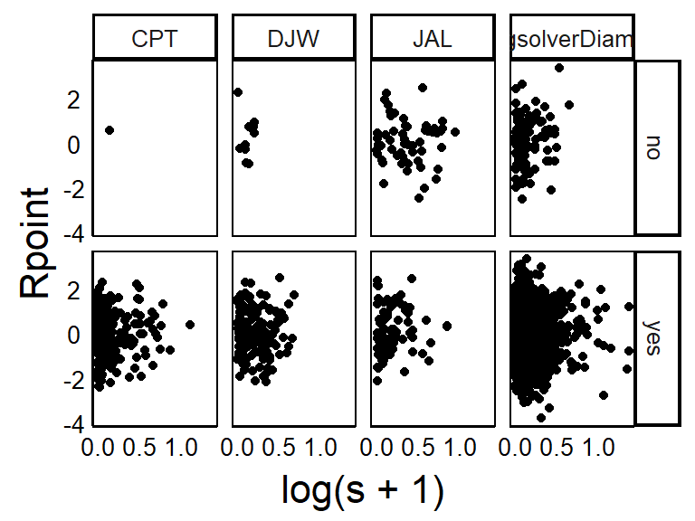
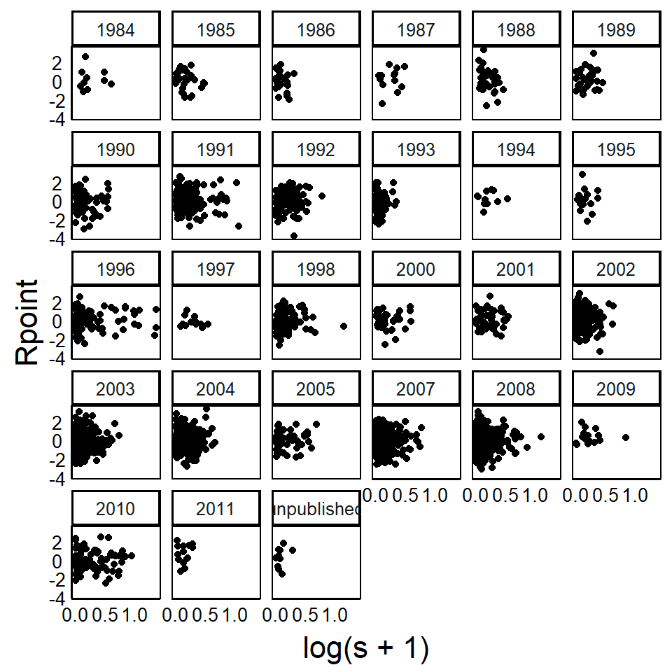
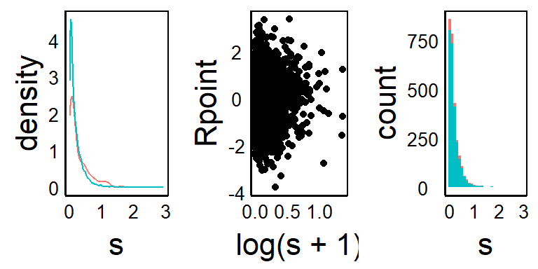
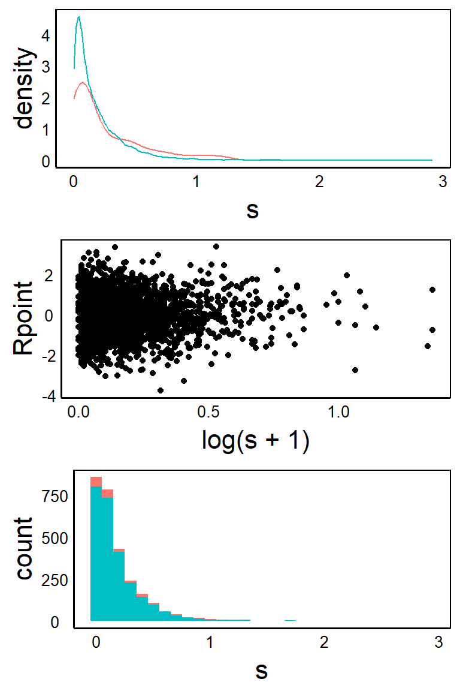
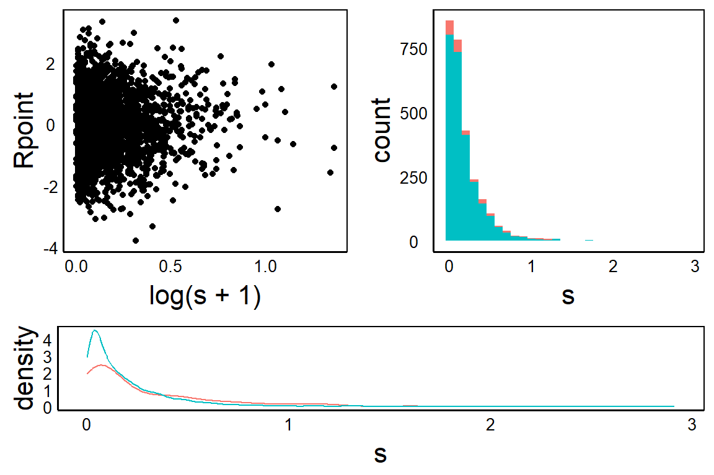
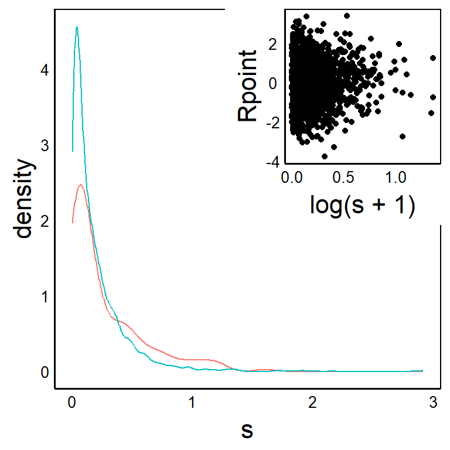

library(ggplot2)
source("http://bit.ly/theme_pub")
theme_set(theme_pub())Multi-plot Graphs
Introduction
In the Quick Visualizations Chapter, we explored how to make multiple graphs for different groups using the facet() function. Let’s review briefly and then look at more advanced multi-graph options.
Setup
First, we’ll run the usual plotting code.
Continuing from the previous chapter, we’ll work with the selection data from Colautti & Lau (2015). We’ll also change the header names, remove missing values, replace \(s\) with \(|s|\) and add a random variable Rpoint, as we did in the previous chapter.
SelData<-read.csv(
"https://colauttilab.github.io/RCrashCourse/Selection_Data.csv")
names(SelData)<-c("Collector", "Author", "Year", "Journal",
"Vol", "Species", "Native", "N",
"Fitness.measure", "Trait", "s",
"s.SE", "s.P", "B", "B.SE", "B.P")
SelData<-SelData[!is.na(SelData$s),]
SelData$s<-abs(SelData$s)
SelData$Rpoint<-rnorm(nrow(SelData))facets
There are three main facet functions, each with different options.
facet_nullmakes a single graph, this is the default forggplot(), as we saw earlierfacet_gridlets us define a grid and set the vertical and horizontal variablesfacet_wrapis a convenient option if only have one categorical variable but many categories
Remember: one little tricky part of facets with ggplot is that we can either use the tilde notation (. ~ .) with the facet_grid function, or else we must define the variable for faceting with the vars() function. The vars() function indicate which categorical variables from the original data set should be used to subset the graphs.
Returning to the BivPlot example above:
BivPlot<-ggplot(data=SelData, aes(x=log(s+1), y=Rpoint)) +
geom_point()
BivPlot + facet_grid(Native ~ Collector)
BivPlot<-ggplot(data=SelData, aes(x=log(s+1), y=Rpoint)) +
geom_point()
BivPlot + facet_wrap(vars(Year))
Note that this large, multi-panel graph does not reproduce well in this textbook, but may look better if plotted to a large window on your computer, or output to an external file with the pdf() or svg() functions, as discussed in the Basic Customizations Chapter.
gridExtra Package
Facets produce graphs that all have the same dimension and the same x- and y-axes. We might call these ‘homogeneous’ plots because they use a homogeneous format. For some advanced publications and reports, we might want to include ‘heterogeneous’ plots with different axes and different sizes. The gridExtra package provides options for this.
Remember to install with install.packages("gridExtra") before you try to load the library for the first time.
library(gridExtra)The grid.arrange() funcrion from the gridExtra package allows for more complex multi-panel figures.
grid.arrange()
Use this to combine heterogeneous ggplot objects into a single multi-panel plot.
Note that this will print graphs down rows, then across columns, from top left to bottom right. You can use nrow and ncol to control the layout in a grid format.
First, we’ll add two more graphs for plotting – a histogram and bar plot.
HistPlot<-ggplot(aes(x=s,colour=Native), data=SelData) +
geom_density()
BarPlot<-ggplot(aes(x=s,fill=Native), data=SelData) +
geom_histogram(binwidth=1/10)Let’s start by plotting across one row
grid.arrange(HistPlot,BivPlot,BarPlot,nrow=1)
Alternatively, we can put the plots down one column
grid.arrange(HistPlot,BivPlot,BarPlot,ncol=1)
Note that you might get some warnings based on missing values or wrong binwidth options. You will also see some weird things with different text sizes in the graphs. Normally, you would want to fix these for a final published figure but here we are just focused on showing what is possible with the layouts.
We can see that grid.arrange() allows us to combine multiple graphs with different axes, data, and geom_ geometries. However, the layout of the graphs all have the same dimension. What if we want to combine plots of different size? For example, maybe we want to have one graph that is narowwer but wider than the other two. Or maybe we would like to inset a smaller graph inside of a larger one. The grid package can handle this.
grid Package
We can make more advanced multi-panel graphs using the grid package. This is part of the base installation of R so you don’t need to use install.packages() this time.
library(grid)First, we set up a new plotting area with grid.newpage().
grid.newpage() # Open a new page on grid deviceYou won’t see anything plotted yet. To insert a new graph on top (or inside) the current graph, we use pushViewport to set up an imaginary plotting grid. In this case, imagine breaking up the plotting space into 3 rows by 2 columns.
pushViewport(viewport(layout = grid.layout(3, 2))) Again, there is nothing being plotted yet, we have only set up the plotting area. Next, we print each plotting object into the grid(s) space we would like it to go.
Add the first figure in row 3 and across columns 1:2
print(HistPlot, vp = viewport(layout.pos.row = 3,
layout.pos.col = 1:2))Add the next figure across rows 1 and 2 of column 1
print(BivPlot, vp = viewport(layout.pos.row = 1:2,
layout.pos.col = 1))Add the final figure across rows 1 and 2 of column 2
print(BarPlot, vp = viewport(layout.pos.row = 1:2,
layout.pos.col = 2))
Inset
We can also use pushViewport to set up a grid for plotting on top of an existing graph or image. This can be used to generate a figure with an inset.
First generate the ‘background’ plot. Note that you could alternatively load an image here to place in the background.
HistPlotNext, overlay an invisible grid layout, with the number of cells that can be used to determine size and location of the inset graph. In this case, we’ll set up a 4-by-4 grid and then plot in the top, right corner.
pushViewport(viewport(layout = grid.layout(4, 4)))Finally, add the graph. In this case we want it only in the top two rows and the right-most two columns – i.e. the top-right corner.
print(BivPlot, vp = viewport(layout.pos.row = 1:2,
layout.pos.col = 3:4))The final product:
HistPlot
pushViewport(viewport(layout = grid.layout(4, 4)))
print(BivPlot, vp = viewport(layout.pos.row = 1:2,
layout.pos.col = 3:4))
Further Reading
The 2009 book ggplot2: Elegant Graphics for Data Analysis by Hadley Wickham is the definitive guide to all things ggplot.
A physical copy is published by Springer: http://link.springer.com/book/10.1007%2F978-0-387-98141-3
And there is a free ebook version: https://ggplot2-book.org/